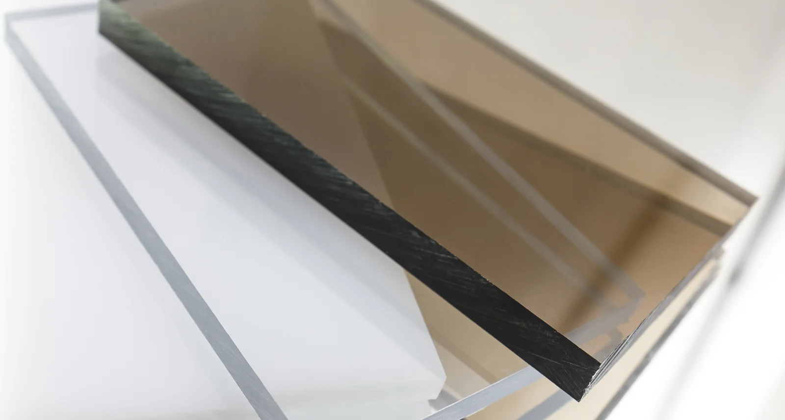
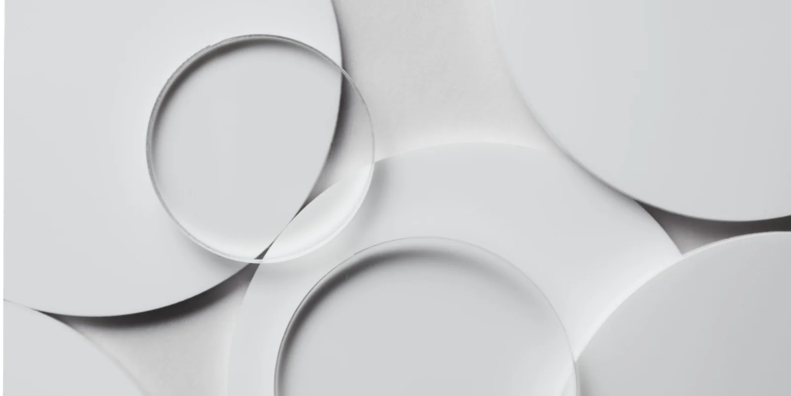

ACRYLIC
Acrylic is a versatile plastic material that can be cut, shaped, and layered into a variety of forms. Available in different colors, finishes, and transparencies, it allows for experimentation with light, texture, and dimension. Across this collection, acrylic transforms into everything from wearable accessories to functional design tools.
EXPLORE THE OBJECTS

